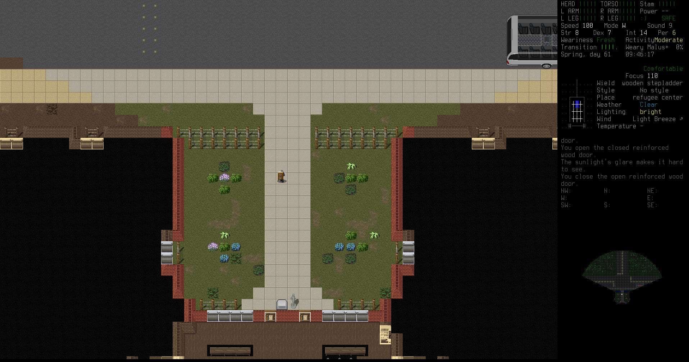
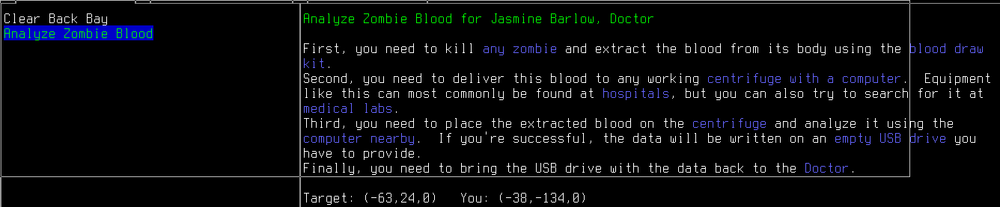
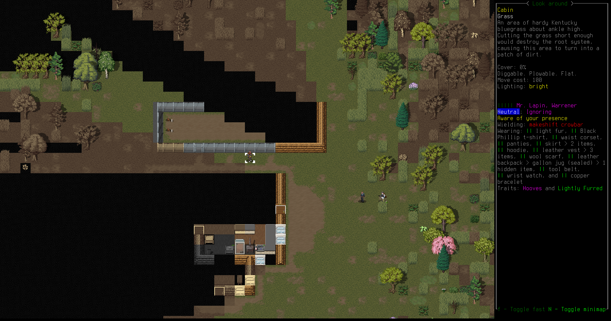

It's time for a new Cataclysm: Dark Days Ahead let's play!

Erik Otto is a former used car salesman shunted away to one of the many FEMA evacuation shelters during the end of the world. He's extremely intelligent, very sociable, and attractive. If he hadn't been a used car salesman, he always thought that he'd make a good cult leader. Well, now that the apocalypse has arrived, now is the chance for the Cult of Erik to arise.


It's just Erik Otto and Alejandro Quick in this evacuation shelter. Erik is dressed fine in his suit and dress shoes, sporting a gold watch. Alejandro, on the other hand, is wielding an SKS rifle and wearing explorer's gear. He was a little more prepared when they got shunted off to the FEMA evacuation shelters. After a night of regaining their senses, they came upstairs. The shelter is no place to stay; clearly no help is coming. Erik decides to persuade Alejandro to come with him. It might be good to have someone like Alejandro escorting him to safer territory.
Erik is a smooth talker, and his looks don't hurt his chances. He easily convinces Alejandro to keep him safe. Now Alejandro is his loyal follower until one of them dies. Hopefully not Erik.


Erik uses the evac shelter console to figure out the route to the regional refugee center. That place should have a lot more people, survivors of the end of the world. It's not even that far by road.

Erik and Alejandro hit the road. They plan to walk all the way to the refugee center, avoiding any trouble along the way. If they do have difficulty, Alejandro can just shoot it.
Erik grabbed up a bunch of useful food, supplies, and medicine from the evac shelter. He's got a lacking inventory heading into this hike: no weapon, but at least he has an emergency blanket!

There's a military roadblock set up on the road outside the evac shelter. Zombie soldiers are attacking a riot controll turret. It's shooting them, and they can't bash through its military-grade steel armor, so they're keeping themselves busy.

Erik and Alejandro sneak to the south of the roadblock. Neither the zombies nor the turrets notice them. Erik does plan to return here eventually, when he can kill those zombies and evade the turret, because the soldiers dropped a bunch of guns and ammo on the ground when they were... turned.

There's a little cabin in the woods by the road, the first signs of residence they've found so far. Erik decides to check it out.
The cabin is completely abandoned, nothing useful here.

A little further down the road the two travelers come across a van stalled in the middle of the road. Erik checks it out, but its interior is trashed. There's some gas in there, which they can siphon off when they get a working vehicle.

In a crashed police SUV, Erik collects a claw bar. This is a useful tool that he can use to pry open doors and break into windows, as well as just swing to defend himself if necessary. He doesn't want to get that messy though. A spear would be the nicest thing to have on his back.

There's a huge wasp hovering by a ruined shed. The two travelers go around; that thing looks really dangerous.
A light industrial compound connected to the road above them but they didn't stop there. Maybe later, once they've stocked up on supplies and weapons, but for now they just want to get to safety.

Some kind of deal went down here, and there's a bunch of bodies. Erik spots a gun on the ground.
This Uzi submachine gun is decent, and uses the common 9x19mm ammunition. Erik takes this gun as his own.

There's more corpses in a field by the road. When the end of the world hit, too many people were caught out in the open.
Erik takes a pair of binoculars from a dead man's pack. These will be useful for surveying the land as they travel.

There's a lonely grave in the field. They stop and look at it for a moment.
A high-tech solar car is parked on the road. It's motor is completely shot, but the panels are still operational and so is the internal recharging station. Erik notes where it is on his scrawled map.

They come down to a little hump in the land, a Last Man On Earth shelter bunker. It doesn't look like anyone lives here, and its really close to the refugee center.
Erik and Alejandro head down inside. The cool underground air and earth scent wafts up to meet them.
This is a lovely place! There were some survival supplies and tools, plus random clothing. Erik likes it so much he decides that this will be their permanent base. With some solar panels and batteries it could be a pretty good house for his future plans!
It's now time to visit the refugee center. Erik sets out on foot and the journey is uneventful.
The forest and fields give way to a fenced-in overgrown road leading to a huge brick building.
Here at the entrance to the refugee center, Erik approaches the reinforced wood doors. Vehicles scatter the parking area surrounding the refugee center, and the place is lit up with electric lights.
Erik steps into the refugee center lobby, the center of trading and life in the post-apocalyptic world.
Smokes offers Erik a wide array of bartering options.
Smokes and the doctor both offer Erik some missions. Smokes wants Erik's group to help clear out the back bay of zombies. The doctor wants Erik to analyze some zombie blood.
The nearest hospital is a ways to the south, according to the doctor, but now at least Erik knows where a city is.
After returning from the refugee center, Erik and Alejandro strip the solar car of panels. They'll set up a solar-powerered base soon.
A cabin visible in the forest nearby draws Erik's attention, so he and Alejandro go check it out.
There's a strange man with hooves and fur keeping rabbits living there. He'd like them to bring him logs, so maybe Erik will curry favor with the rabbit man that way.
He also wants Erik's crew to contact a farm family a long way to the south east.
After that, Erik decides to check out some campgrounds nearby, looking for vehicles and supplies.
At one of them Erik hotwires a diesel hatchback and drives it home.
There's a motel to the west. Erik and Alejandro checks it out.
Erik sneaks past zombies to steal an RV parked in the motel lot.
It makes a nice view, parked in front of his bunker.
He just installs a makeshift drive belt for the alternator, and it's a solid vehicle, if very fuel inefficient due to the damaged engine.
Now that Erik and Alejandro have moved in to their new base and made contact with their neighbors, it's time for them to build an electrical grid and get started collecting supplies, weapons, and friends.